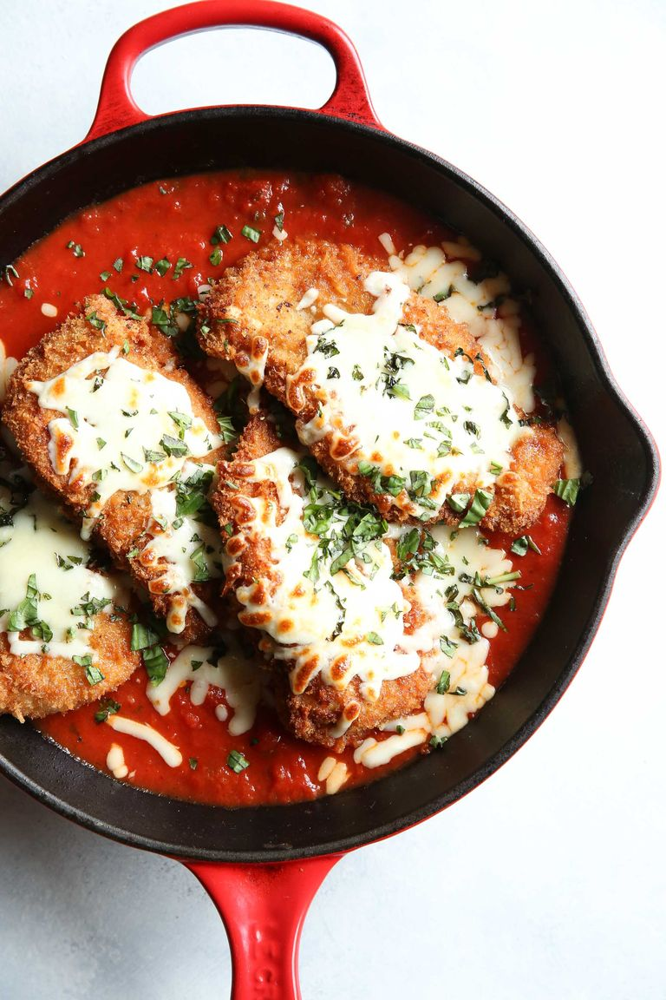

Chicken Parmesan

Image by Judy Kim on Pinterist
Description
Chicken Parm, short for chicken parmesan or chicken parmigiano, is a casserole-type dish with chicken in a cheesy marinara sauce.
It is one of Mari's favorites.
Making your own breaded and air-fried chicken is the most annoying part of the recipe. I have not thoroughly described seasoning your own
but you can add any kind of herbs and spices to the breading or put on the chicken at the start for a more flavorfull dish. If you start with italian breadcrumbs
that can be sufficient on its own with the marinara sauce. If you want
a crispy texture you can prepare them as individual fried chicken pieces with a smaller amount of sauce
and cheese on top on a baking sheet, or you can do the more traditional method and have chicken submerged
in sauce and cheese in a baking dish.
Ingredients
- 3-4 chicken breasts, tenderized with a mallet
- 1/2 cup of shredded parmesan cheese
- 1/2 to 1 jar of marinara sauce
- 1 to 2 cups? of mozarella cheese
- 2 cloves garlic, minced
- 1 1/2 cup panko breadcrumbs, italian seasoned or traditional
- 2 eggs, whisked
- 2 tablespoons butter
- salt, to taste, for chicken
- ground pepper, to taste, for chicken
- 1/2 cup of flour
- Fresh basil, oregano, or parsley, optional, to garnish
Steps
- Pre heat oven to 425F
- Put the flour in a small bowl
- Put the eggs in a seperate small bowl
- Put panko breadcrumbs in a third small bowl, optionally add a pinch of seasonings like paprika, oregano, chili powder.
- Put each chicken breast in the flour bowl and coat it with flour, the dunk in the egg bowl, then dunk in the breadcrumb bowl until covered
- Air fry the breaded chicken breasts at 400F for 5-8 minutes, they dont have to be cooked through just to have the outsides crisped and dry
- Put a 1/4" to 1/2" layer of sauce on the bottom of a baking dish
- Add the chicken breasts, the tops should not be submerged in the sauce
- Put some parmesan cheese on top of each chicken breast, followed by a dollop of sauce and then cover with mozarella cheese
- Bake at 425F for 15-20 minutes, until a good amount of the cheese topping is starting to crisp up and darken
- Top with chopped basil,parsley, or oregano and serve
- Optionally, after air frying the chicken breasts you can spread them out on a baking tray, cover in parmesan, spoon marinara sauce on top almost to the edges, and then
cover with mozarella and bake at 430 for 15-20min. Recipes online say this makes for crispier chicken but I like the heartiness of the casserole-type dish.